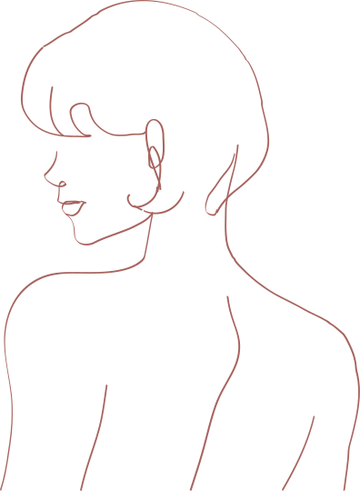

Dermatologia
Diagnostyka i leczenie chorób skóry, dermatochirurgia oraz diagnostyka i leczenie nowotworów skóry — w tym trudno gojących się ran i trądziku odwróconego.
Zobacz specjalizację →Butikowa klinika kobieca Gdańsk
Dermatologia, ginekologia i medycyna estetyczna w kameralnej przestrzeni, gdzie nowoczesna wiedza spotyka się z ciepłem, dyskrecją i czasem poświęconym wyłącznie Tobie.
Miejsce stworzone przez kobiety dla kobiet.
O klinice
Sante Medica Petit to kameralne miejsce stworzone przez kobiety, które rozumieją, jak ważne są spokój, dyskrecja i możliwość swobodnej rozmowy o zdrowiu.
Wierzymy, że troska o zdrowie i piękno kobiety zaczyna się od poczucia bezpieczeństwa. Dlatego przyjmujemy mniej pacjentek dziennie — by dać Ci więcej uwagi, więcej czasu i opiekę naprawdę dopasowaną do Ciebie.
Pracujemy w modelu interdyscyplinarnym — współpraca lekarzy różnych specjalizacji pozwala prowadzić terapię całościowo, a nie leczyć pojedynczy objaw. Santé powstało z potrzeby stworzenia miejsca, w którym kobieta może otwarcie rozmawiać o swoim zdrowiu — także o tym, co przez lata bywało pomijane.
Specjalizacje
Dermatologia, ginekologia plastyczna i regeneracyjna oraz medycyna estetyczna — w jednym, kameralnym miejscu i pod opieką doświadczonych specjalistek.
Diagnostyka i leczenie chorób skóry, dermatochirurgia oraz diagnostyka i leczenie nowotworów skóry — w tym trudno gojących się ran i trądziku odwróconego.
Zobacz specjalizację →Leczenie objawów menopauzy (GSM), regeneracja i rewitalizacja tkanek intymnych oraz wsparcie w problemach uroginekologicznych — nietrzymaniu moczu i obniżeniu narządów miednicy.
Zobacz specjalizację →Zabiegi na twarz i ciało oparte na indywidualnym planie — naturalne efekty, które podkreślają Twoje piękno.
Zobacz specjalizację →Spokojna opieka nad ciążą i precyzyjne badania USG 3D/4D — ze stałym, ludzkim kontaktem z lekarką.
Zobacz specjalizację →Laser frakcyjny w terapii blizn, rozstępów i odmładzania skóry — skutecznie, komfortowo i bezpiecznie.
Zobacz specjalizację →Obrazowanie najnowszej generacji — z jasnym, spokojnym omówieniem każdego wyniku, krok po kroku.
Zobacz specjalizację →Opieka onkologiczna
Otaczamy opieką kobiety po leczeniu onkologicznym, zwłaszcza po terapii raka piersi. Stawiamy na bezpieczeństwo i rozwiązania niehormonalne, które pomagają odzyskać komfort i poczucie kontroli nad własnym ciałem.

Zespół
Za każdą wizytą stoją prawdziwe twarze — doświadczone specjalistki, które słuchają, tłumaczą i są przy Tobie na dłużej.
Współwłaścicielka i założycielka
Specjalistka ginekologii i położnictwa · w trakcie specjalizacji z endokrynologii ginekologicznej i niepłodności
„Dobra medycyna zaczyna się od wysłuchania. Reszta jest jej naturalną konsekwencją.”
Specjalistka ginekologii i położnictwa, w trakcie specjalizacji z endokrynologii ginekologicznej i niepłodności. Absolwentka Akademii Medycznej w Gdańsku, z doświadczeniem klinicznym w Uniwersyteckim Centrum Klinicznym. Prowadzi pacjentki m.in. w endometriozie, zespole policystycznych jajników (PCOS), zaburzeniach miesiączkowania i menopauzie — ceniona za szczegółowe, spokojne podejście i pełne poszanowanie intymności.
Współzałożyciel · Dermatolog
Dermatologia oraz zabiegi medycyny estetycznej twarzy i ciała. Łączy precyzję z naturalnym efektem.
Współwłaścicielka i założycielka · CEO
Dba o to, by każda wizyta w Sante była doświadczeniem spokoju, troski i najwyższej jakości.
Ginekolog · ginekolog dziecięcy
Opieka ginekologiczna dla kobiet i dziewczynek. Ceniona za empatię i cierpliwość.
Ginekolog
Kompleksowa opieka ginekologiczna i profilaktyka, prowadzona spokojnie i z należytą uwagą.
Ginekolog
Diagnostyka i leczenie ginekologiczne w komfortowych, dyskretnych warunkach.
Ginekolog · perinatolog
Opieka nad ciążą i badania USG. Wszystko tłumaczy szczegółowo, w spokojnej i życzliwej atmosferze.
Dermatolog
Diagnostyka i leczenie chorób skóry. Ceniona za konkretne, indywidualne podejście do każdej pacjentki.
Dermatolog
Fachowa i profesjonalna opieka dermatologiczna — od profilaktyki po leczenie zmian skórnych.
Medycyna estetyczna
Tworzy spersonalizowane plany pielęgnacji i zabiegów — z naciskiem na naturalny, harmonijny efekt.
Położna · kosmetolog · trycholog
Wspiera pacjentki w obszarze opieki położniczej, kosmetologii i trychologii, łącząc uważność z praktycznym planem działania.
Położna · recepcja
Pierwsza osoba, którą spotkasz w klinice. Dba o to, by każda pacjentka czuła się zaopiekowana.
Recepcja
Z uśmiechem wita pacjentki i czuwa nad sprawnym przebiegiem każdej wizyty — od umówienia po pożegnanie.

Przestrzeń
Zaprojektowałyśmy każdy detal — od światła, przez zapach, po fakturę tkanin — tak, by wizyta u lekarza mogła być momentem wytchnienia, a nie napięcia.
Nie chciałyśmy gabinetu. Chciałyśmy domu, w którym dba się o zdrowie.
Technologia & nowoczesna opieka
Inwestujemy w sprzęt i metody najnowszej generacji — nie dla efektu, lecz po to, by dawać Ci pewność i jasne odpowiedzi.
Obrazowanie o wysokiej rozdzielczości dla dokładnej i bezpiecznej diagnostyki.
Laser frakcyjny w terapii blizn, rozstępów oraz odmładzaniu i regeneracji skóry.
Nowoczesne, komfortowe zabiegi ujędrniające i regeneracyjne bez długiej rekonwalescencji.
Terapie regeneracyjne w oparciu o naturalne zasoby Twojego organizmu.
Cennik
Wybierz obszar, by zobaczyć szczegółowy cennik. Ostateczny zakres zabiegu zawsze ustalamy podczas konsultacji.
Podane ceny mają charakter informacyjny i mogą ulec zmianie. Pełną wycenę oraz dobór terapii ustalamy indywidualnie na wizycie. Rezerwacja: znanylekarz.pl lub telefonicznie.
Opinie pacjentek · 5,0 ★ · 69 opinii
Dobrze wiedzieć
Krótko o tym, z czym najczęściej przychodzą do nas pacjentki — i kiedy warto umówić wizytę.
To nowoczesna dziedzina łącząca ginekologię z medycyną regeneracyjną. Jej celem jest odbudowa, odmłodzenie i poprawa funkcjonowania narządów intymnych z wykorzystaniem innowacyjnych metod terapeutycznych.
To zespół objawów związanych z menopauzą — suchość okolic intymnych, ból, pieczenie, nawracające infekcje czy dyskomfort podczas współżycia. Skupiamy się na rozwiązaniach, które realnie poprawiają funkcję tkanek i komfort codziennego życia.
Położna opiekuje się kobietą w okresie ciąży, porodu i połogu, a także wspiera zdrowie intymne i planowanie rodziny. Wizyty u położnej często stanowią pierwszy kontakt z opieką okołoporodową.
To subspecjalność położnictwa (medycyna matczyno-płodowa), zajmująca się diagnostyką i leczeniem powikłań ciąży oraz opieką nad ciążami wysokiego ryzyka — z myślą o bezpieczeństwie matki i dziecka.
To specjalistyczna gałąź dermatologii skupiona na kompleksowej diagnostyce i leczeniu chorób skóry w warunkach klinicznych — łączy wiedzę medyczną z nowoczesnymi metodami terapeutycznymi.
To dziedzina łącząca leczenie skóry z poprawą jej wyglądu. Z wykorzystaniem nowoczesnych technologii przywraca skórze zdrowie, młodość i blask.
Łączy wiedzę z medycyny, chemii i estetyki. Skupia się na pielęgnacji skóry, włosów, paznokci oraz ciała — by poprawić ich wygląd, kondycję i samopoczucie.
Dziedzina zajmująca się diagnostyką i leczeniem chorób włosów oraz skóry głowy — kompleksowa pomoc dla osób zmagających się z problemami włosów i owłosionej skóry głowy.
Umów wizytę
Zostaw kontakt, a oddzwonimy, by spokojnie dobrać termin i specjalistkę. Bez pośpiechu, bez presji.
Kontakt & lokalizacja